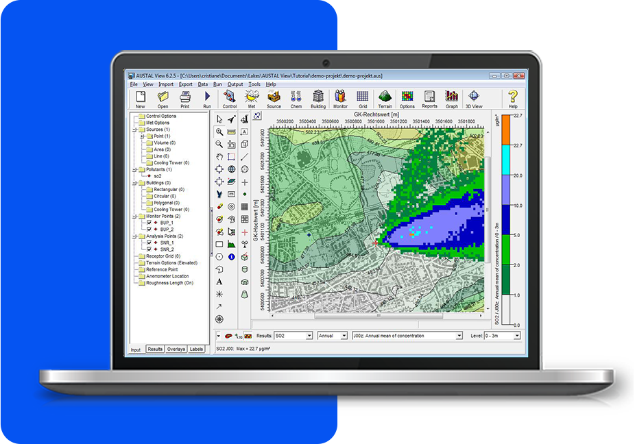
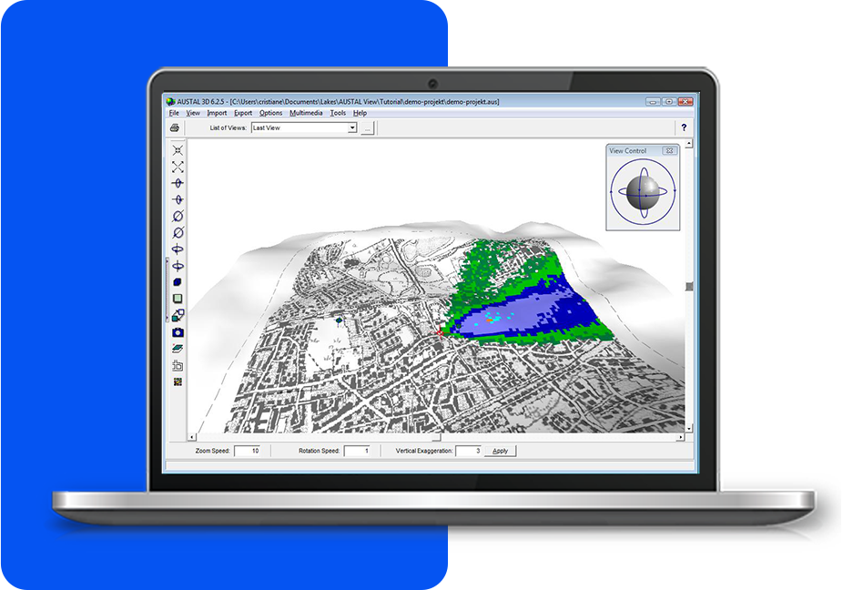
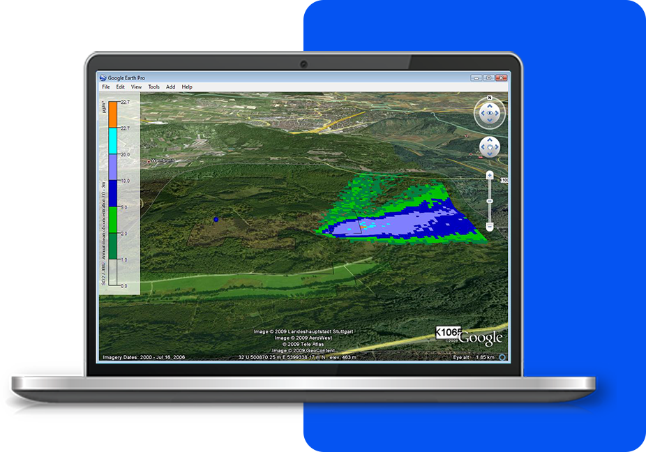
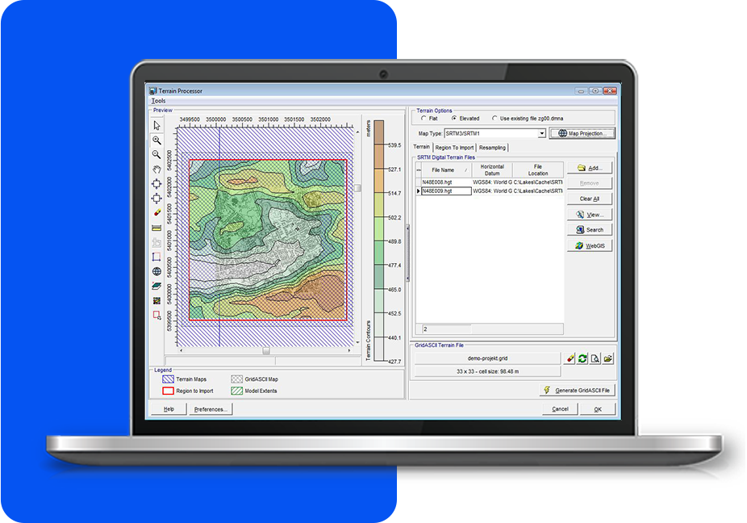
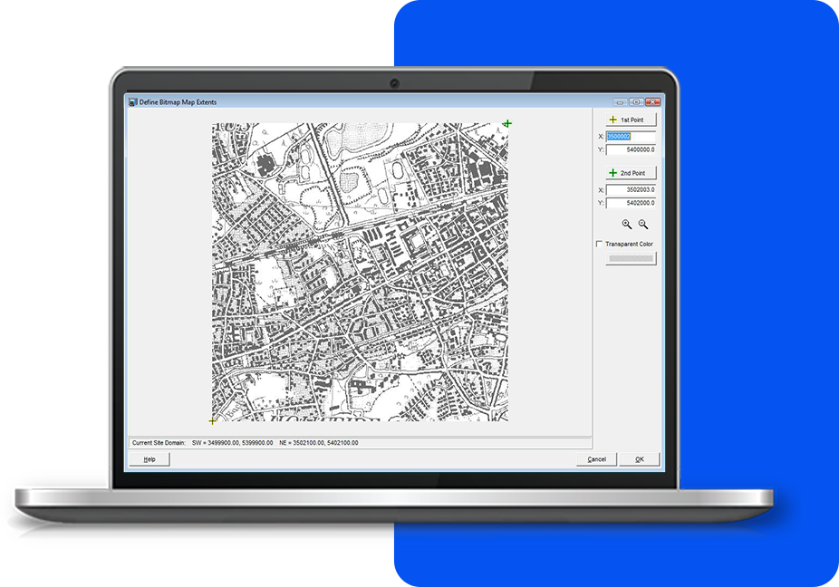

Integrated Graphical User Interface
A fully integrated GIS-based interface with powerful, intuitive tools that simplify and enhance your environmental modeling. With easy-to-use graphical tools, you can precisely draw and define sources, buildings, and receptors, ensuring accurate mapping of your study area. It supports seamless model run execution, allowing for efficient data processing and automatically generates and posts detailed contours, providing clear and immediate insights into pollutant distribution.

Lakes Tile Maps
Enhance your projects by automatically downloading and importing high-resolution satellite and street map imagery directly into your modeling projects. This feature simplifies the graphical input of model objects, such as sources, buildings, and receptors, by providing a highly detailed and accurate visual backdrop. The imported imagery serves as an excellent spatial reference point, allowing you to precisely position and define model elements within their real-world context.

3D Visualization
Our 3D visualization feature allows you to view emissions sources, buildings, concentration levels, and deposition contour results, all seamlessly integrated within the context of your surrounding terrain. 3D visualization ensures that every aspect of your model is accurately represented, offering a realistic depiction of how pollutants interact with the physical landscape. By seeing how your sources, buildings, and concentration or deposition contours are distributed across the terrain, you gain valuable insights into potential environmental impacts, making it easier to communicate findings and make informed decisions.

Google Earth Export
This powerful feature enables you to export your buildings, emission sources, receptors, and pollutant contours directly into Google Earth. By doing so, you can visualize your data in a more immersive and realistic manner, providing a better understanding of how pollutants might disperse and affect the surrounding areas. This enhanced visualization tool not only aids in better assessing environmental impacts but also supports more informed decision-making by giving you a clearer picture of potential pollutant distribution across various geographic landscapes.

Terrain Processors with Auto Downloads (STRM)
This feature offers advanced terrain processing capabilities, supporting various terrain data formats such as SRTM, USGS DEM, and XYZ, ensuring flexibility and accuracy in your environmental modeling. It includes an automated download feature for easy retrieval of terrain data from WebGIS and SRTM3 terrain data at 90m resolution. Automated conversion of these formats into the GridASCII data format required by the model.

Support for Several Base Map Formats
Visualizing your site in AUSTAL View is easy. Our full-featured support for a variety of image and base map formats allow you to design your model with confidence and view your results in context with your site. Supported base maps include: Bitmap, DLG, DXF, JPEG, LULC, MrSID, Shapefile, and TIFF/GeoTIFF.